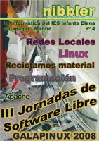
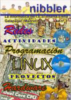

Esta página contiene enlaces a los números publicados de la revista Nibbler en 2009 - 2008 - 2007 - 2006 - 2005.
Página web: Revista Nibble (copia en archive.org de junio de 2012)
Número 5 - 2009 diciembre
Descarga (PDF 13.2 MB español)

Número 4 - 2008 diciembre
Descarga (PDF 6.1 MB español)

Número 3 - 2007 diciembre
Descarga (PDF 6.4 MB español)
Número 2 - 2006 diciembre
Descarga (PDF 40.9 MB español)
Número 1 - 2005 diciembre
Descarga (PDF 7.2 MB español)